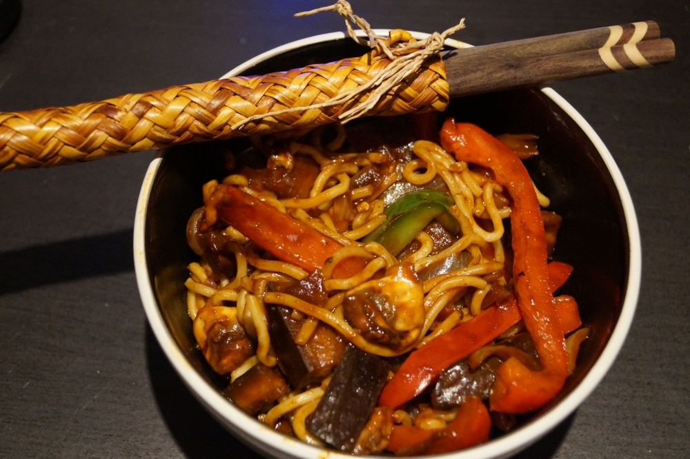

Stir Fry
This is really quick to throw together and there isn't really any right or wrong vegetables, so it's a great way to use any leftover veg.

Ingredients
- 2 tbsp Vegetable Oil
- 1 Onion
- 2 Garlic Cloves
- 1 pepper (any colour)
- 50g Babycorn
- 50g Mangetout
- 1/2 small Broccoli
- 1/2 Courgette
- 60g Mushrooms
- Soy Sauce
- Packet of favourite Stir Fry Sauce (This can also be homemade with soy sauce, rice vinegar, brown sugar, and any preferred seasoning eg ginger, garlic, chinese 5 spice)
- 300-400g Straight to Wok Udon Noodles
- Optional: Spoonful Peanut Butter or Cashews
Method
Note: Cut the vegetables with the cooking time in mind, i.e. broccoli and carrot take a relatively long time to cook so should be cut as small as possible if being used.
Heat the oil in a wok or large frying pan. Meanwhile slice the onion and mince the garlic. Add these and fry for about 2 minutes (don't let them brown)
Cut the broccoli into small florets, pepper into thin slices, halve the babycorn, cut the courgette into matchsticks, and trim the mangetout
Add any veg that takes a longer to cook such as the broccoli and babycorn and fry for 2 minutes. Then add the rest of the veg: mangetout, courgette, mushrooms, pepper, and about 2 tbsp of soy sauce. Stir fry for another 3-4 minutes. Keep the ingredients moving and ensure vegetables aren't left up the side of the wok. The vegetables should be just beginning to soften but still be crisp.
Add the udon noodles and stir fry sauce. Keep on the heat for another 1-2 minutes and stir with a spatula to gently break up the noodles.
Optional: Add cashew nuts or top with sesame seeds.
Could also serve with rice instead of noodles.